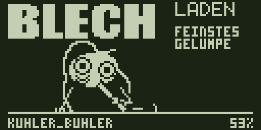
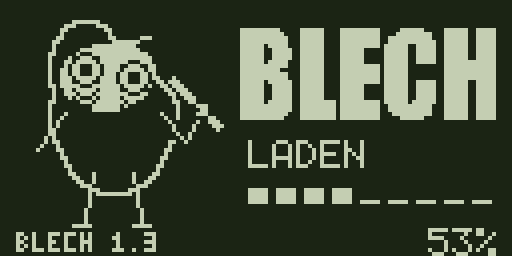
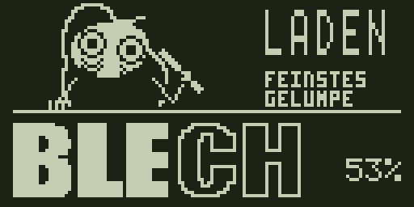
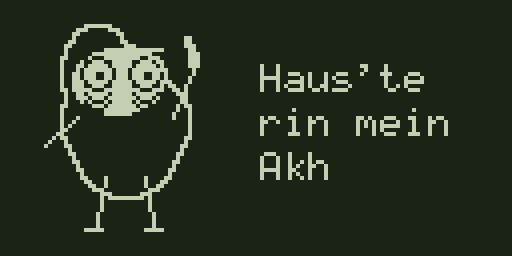

Die Szene
Werkbank

Blechy am Tisch. Die Handlung steht im Mittelpunkt, BLECH hält das Bild zusammen.
Der Schwerpunkt: Figur, Hand und Röhrchen erzählen gemeinsam den Ladevorgang.
Blechy auf dem Gerät
Ein fester Schriftzug, ein klares Gesicht und Bewegungen, die zusammenpassen. Schau dir die drei Entwürfe nebeneinander an, auch in den echten 128 × 64 Pixeln.
Standbilder zum Vergleichen.
Die Szene

Blechy am Tisch. Die Handlung steht im Mittelpunkt, BLECH hält das Bild zusammen.
Der Schwerpunkt: Figur, Hand und Röhrchen erzählen gemeinsam den Ladevorgang.
Die Aufteilung

Figur und Schrift bekommen ihren eigenen Platz. Das Bild bleibt klar gegliedert.
Der Schwerpunkt: Blechy ist gut erkennbar, die Marke bleibt daneben präsent.
Die Marke

Blechy schaut über die Kante. Darunter füllt sich BLECH, der Schriftzug wird selbst zur Ladeanzeige.
Der Schwerpunkt: Ruhige Haltepose und wachsende Pupillen. Die Striche als eigene Handlung entfallen.
Animation aus zeigt jeweils ein festes PNG aus der Mitte des Ladevorgangs. Originalmaßstab bedeutet 128 × 64 CSS-Pixel; die physische Größe hängt von deinem Bildschirm ab.
Der gemeinsame Abschied
Blechy winkt, die Röhre geht aus. Der Abschied bleibt als eigener Ablauf erhalten und bekommt denselben dunklen Grund.
Ausschalten als GIF öffnen